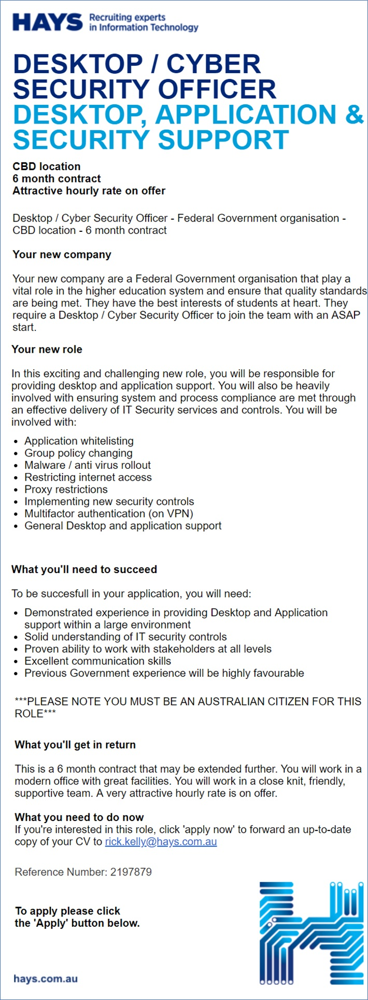
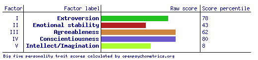
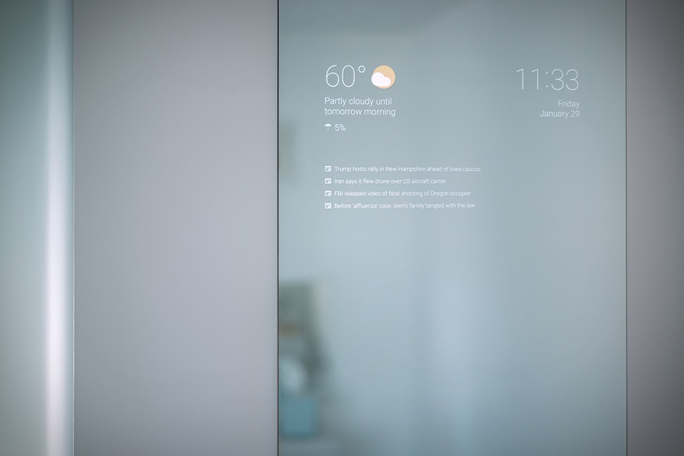

My ProfileAbout Me!Name:Behishta Farzam Student Number:s3795693 Email:s3795693@student.rmit.edu.au
I am originally from Afghanistan and came to Australia six years ago. I have been married for four years and have a beautiful two-year-old daughter. In my personal time, I love spending time with my family especially with my daughter, and exercising. I have previously completed courses in the Dental and Health Science fields; qualifications from which I gained employment at a dental clinic where I currently work as a dental nurse.
Interest in ITI chose to study information technology as I have a brother-in-law who works in the industry and I was inspired by the kind of work that he does. It is also a fast growing and demanding field and so should present a wide range of employment opportunities. I chose to study with RMIT because I have previously studied here and had a great educational experience. It is also conveniently located as it is very close to where I live. I also have friends and relatives that are currently studying at RMIT and they are very happy with their experiences and have recommended and encouraged me to apply here. I am currently studying two units from the first year of Bachelor of Technology (computing studies) which are Introduction to Programming and Introduction to Information Technology. I find these subjects are giving me a good understanding of IT in general, and by finishing these units I expect to be more competent with programming and IT.Ideal Job Upon completion of this course and further education, I would like to work in the cyber security field. My ideal job would be a cyber security officer or specialist working in law enforcement, similar to the position described in the link below. The job advertisement is for a cyber security role for a recruiter to work at a Federal Government organisation in Melbourne CBD. The duties of the role include providing desktop, application support and application whitelisting. The applicant must be able to deal with malware and anti-virus rollout and proxy restriction. The location for this position would be ideal for me as it is close to where I live, allowing to manage my personal commitments. It is also expected that this role would have a typically higher salary given that it is a short-term role of only six months. Though not stated in the advertisement, there may be opportunity for the duration of the role to be extended. To be successful, the applicant must have previous experience providing desktop and application support, a good understanding of information technology, and knowledge of IT security controls. They must also have excellent communication and stakeholder management skills, with the ability to work effectively in a team environment. Having a previous experience working in Government is also noted as being ‘highly favourable’ to ensure efficient integration and background knowledge of Government processes and systems. The applicant must be an Australian citizen. I have successfully completed two courses in the English language when I initially arrived in Australia in 2013. This helped me to prepare for life in Australia, particularly in seeking employment and pursuing further studies. After gaining competence in English, I completed further Certificates and a Diploma (also at RMIT) in the health fields to support my part time employment role as a dental nurse. I have been a dental nurse for five years now but over time I have realised that it’s not something that I want to continue to do, which is why I have commenced studying IT. I have always enjoyed working with computers and keeping up to date with the latest devices and technology in the industry. I would love the opportunity to further my skills, knowledge and experience to eventually find employment in the cyber security field. To achieve my goal of finding employment in cyber security, I have to complete a Bachelor of Technology (computing studies) as a pathway to get into a Bachelor of Cyber Security course. After completing a degree in cyber security, I hope to be able to find a job as a cyber security officer or specialist. I would likely need some experience working in a related IT role prior to working in cyber security. This kind of experience I hope to find during the later years of my study. Personal ProfileI have undertaken a Myers-Briggs test, Learning Style test, and a Big Five Personality test to better understand my personal traits. The result of the Myers-Briggs test describes my personality as ‘Consul ESFJ-T’. This result defines me as “a social creature who loves to keep up to date with her friends” and not someone who is interested or enjoys politics and scientific debates. The result of the online Learning Style test indicates that my preferred learning style is Auditory, meaning that I generally learn better by listing to a lecturer or watching videos.The result of the Big Five Personality test is shown below, against each of the five personality traits:  By taking these tests I have learned more about myself. For instance, how I can learn quickly as I now know my preferred learning style that I have never realised before (auditory). I have also learned how my personality type and individual traits define what type of person I am. The result of these tests will definitely influence my behaviour in a team as I now know that I have to listen to other team members in order to understand them better. As my personality is outgoing, I can definitely do well as a team member by building team relationships and lead where others may be more introverted. When forming a team, I would consider choosing people who have the same learning style and personality as mine allowing us to learn and work better together.Project Idea – Smart Mirror OverviewA smart mirror is a normal mirror with an electronic device fitted behind the glass. This device behind the mirror is can be programmed to show the viewer a particular detail such as the time, date, weather forecast, news updates or any other customised information. A smart mirror is a mirror with built in hardware technology and supporting software (IIT, 2019). Motivation Technology is always advancing and improving, with an aim to make life easier and convenient for users. The smart mirror follows the same principle, to provide relevant information to the user without them having to actively seek it. Generally, most people use a mirror in the morning before going about their day. The smart mirror can display a limitless amount of relevant information as the user prepares for the day, without them having to access their phone or turn on the television. Whether it is to find the days weather forecast or latest news updates, the smart mirror can be programmed to do it all depending on how much software and hardware is installed in the initial set up. Fortunately, there are some IT specialists and Google workers who have made this technology possible for us (Ingvar, 2017). This simple yet helpful concept has provided the motivation behind selecting the smart mirror for this project. The technology for smart mirrors has existed for years though there is not a big investment from large IT companies to supply this product, and is a relatively unknown product amongst the general population. Cybertecture are one of the few companies that supply smart mirrors though they provide a very limited range and generally at a high cost. Other smaller companies, such as Evervue, also develop smart mirrors and are based in Australia however these also come at a high price (Everue, 2019). For perspective, the cheapest smart mirror from Evervue is $1,899 (excluding delivery) whereas building a smart mirror using a monitor, computer (such as Raspberry Pi), a two-way mirror and a frame would be in the order of $500.DescriptionThe smart mirror has a very basic design to start with, requiring a two-way mirror or acrylic glass. The two-way mirror or acrylic glass is used to enable a display device to be installed behind and be visible from the front. Using acrylic glass is usually cheaper and provides a better outcome compared to the two-way mirror, as it can produce a more visible display. To set up the display for the graphics, the size of the desired output needs to decided. For a large display, larger hardware needs to be installed behind the mirror such as a computer monitor with a simple computer (Raspberry Pi in this instance), and for a smaller display, a mobile tablet device can be used (Android tablet). The desired information outputs for either device for displaying on the mirror will need to be programmed before mounting. The devices/ monitor will also require a power supply to enable the smart mirror to operate.Tools and TechnologiesTo make a smart mirror using an Android tablet to display time, date, or weather widgets etc., the smart mirror code needs to be downloaded from GitHub then transferred and installed on the Android device. This will start up the display for the smart mirror application. In order to regularly collect and update the display data, the device must be connected to an internet network (Wi-Fi in this instance). A power supply is also required to ensure the device is available at all times. The data is collected by code which is then transmitted by Wi-Fi and presented on the screen of the Android device. This is the information visible on the front of the mirror (IIT, 2019). The display settings of the Android device can be amended to provide a customised view to the user. The area around the Android device on the back of the mirror should be blacked out using cardboard or similar to ensure a good reflection from the front. To make a smart mirror using a monitor and computer, a monitor with HDMI input is required. To manage the data and information going to the display, a small computer such as a Raspberry Pi with a Wi-Fi adapter needs to be linked to the monitor. For the initial setup of the Raspberry Pi, it needs to be connected to a personal computer and have the smart mirror code transferred and installed. Detailed instruction for this is available on GitHub. Once the installation is complete, the Raspberry Pi can be connected to the monitor and mounted to the back of the mirror (IIT, 2019). Similar to the Android device setup, the remaining backing area of the mirror should be blacked out with cardboard to ensure a good reflection from the front, and a power supply is required. Further enhancements can also be made to the smart mirror. A motion sensor can be added the setup, such as an Arduino Uno, which can detect movement in front of the mirror and power the Android display on and off when presence is detected to save power. To link Google Alexa and enable voice control and output, a USB microphone and a USB speaker can also be incorporated (Postscapes, 2019).Skills RequiredThere is minimal skill and knowledge required in developing a smart mirror. All instructions for are readily available online including relevant codes and applications. Only hardware needs to be sourced such as the Android device, monitor, Raspberry Pi, and associated hardware such as cabling, as well as the mirror itself and any fixing/ hanging equipment. A basic IT knowledge would make the process easier, though information and support are easily accessible online.OutcomeMirrors has been in use for over 200 years and have always been a useful piece of furniture. The addition of hardware technology to convert to a smart mirror makes it more useful by providing relevant and customised information to the user without having to actively seek it. The smart mirror not only has a residential use, but in the commercial and retail environment as well particularly where the mirror is a key feature of the operation such as beauty and barber shops or shopping centres, and can display more than simply weather or news updates. Most importantly, it can be developed at a relatively low cost and effort without the need for spending thousands of dollars to buy one. |